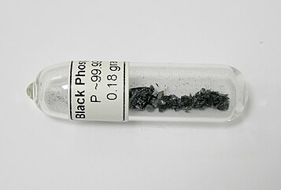
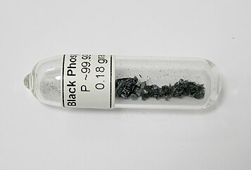

Putih Seperti Lilin , Merah Cerah
Putih Seperti Lilin , Merah Cerah
 Merah tua dan lembahyung

Hitam
Merah tua dan lembahyung

Hitam

Fosforus (Phosphorus)
Fosforus adalah sebuah unsur kimia dengan lambang P dan nomor atom 15. Fosforus elemental eksis dalam dua bentuk utama, fosforus putih dan fosforus merah, tetapi karena sangat reaktif, fosforus tidak pernah ditemukan sebagai unsur bebas di Bumi. Ia memiliki konsentrasi di kerak Bumi sekitar satu gram per kilogram (dibandingkan dengan tembaga yang sekitar 0,06 gram). Dalam mineral, fosforus umumnya terjadi sebagai fosfat.
Fosforus elemental pertama kali diisolasi sebagai fosforus putih pada tahun 1669. Dalam fosforus putih, atom fosforus tersusun dalam gugus berisi 4 atom, ditulis sebagai P4. Fosforus putih memancarkan cahaya redup ketika terkena oksigen – maka namanya, yang diambil dari mitologi Yunani, Φωσφόρος yang berarti 'pembawa cahaya' (Latin Lucifer), merujuk pada "Bintang Fajar", planet Venus. Istilah fosforesensi, yang berarti cahaya dari iluminasi, berasal dari sifat fosforus ini, meskipun kata tersebut telah digunakan untuk proses fisik yang berbeda yang menghasilkan cahaya. Cahaya fosforus disebabkan oleh oksidasi fosforus putih (tetapi bukan merah) — sebuah proses yang sekarang disebut kemiluminesensi. Bersama dengan nitrogen, arsen, antimon, dan bismut, fosforus diklasifikasikan sebagai pniktogen.
Fosforus adalah unsur yang penting untuk menopang kehidupan, sebagian besar melalui fosfat, senyawa-senyawa yang mengandung ion fosfat, PO43−. Fosfat merupakan komponen dari DNA, RNA, ATP, dan fosfolipid, senyawa kompleks yang mendasari sel. Fosforus elemental pertama kali diisolasi dari urine manusia, dan abu tulang merupakan sumber fosfat awal yang penting. Tambang fosfat mengandung fosil karena fosfat hadir dalam endapan fosil sisa-sisa hewan dan kotoran. Tingkat fosfat yang rendah merupakan batas penting untuk pertumbuhan pada sejumlah ekosistem tumbuhan. Sebagian besar senyawa fosforus yang ditambang digunakan sebagai pupuk. Fosfat diperlukan untuk menggantikan fosforus yang dikeluarkan tumbuhan dari tanah, dan permintaan tahunannya meningkat hampir dua kali lebih cepat daripada pertumbuhan populasi manusia. Aplikasi lainnya meliputi senyawa organofosforus dalam detergen, pestisida, dan agen saraf.